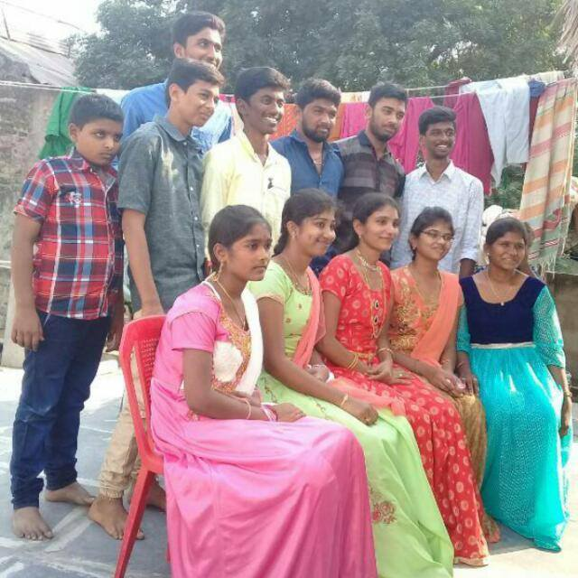
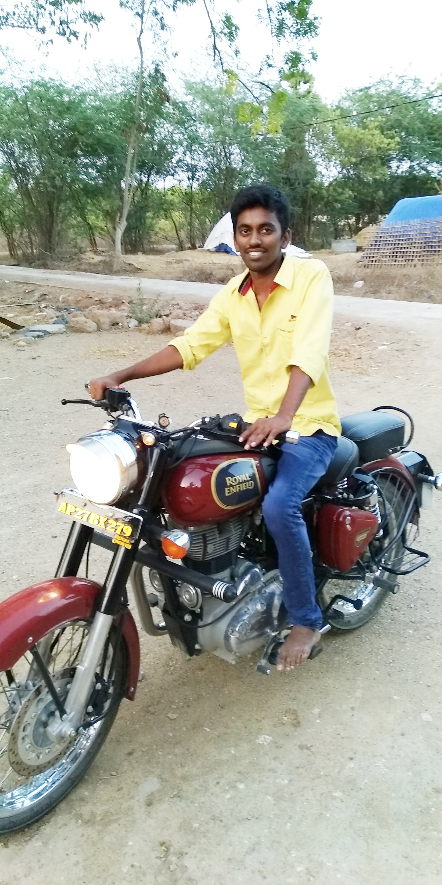
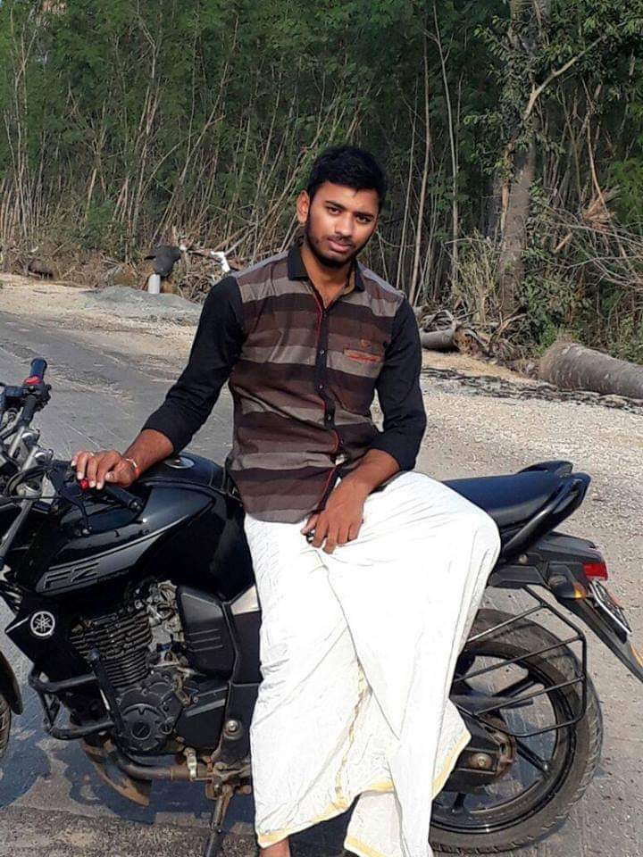
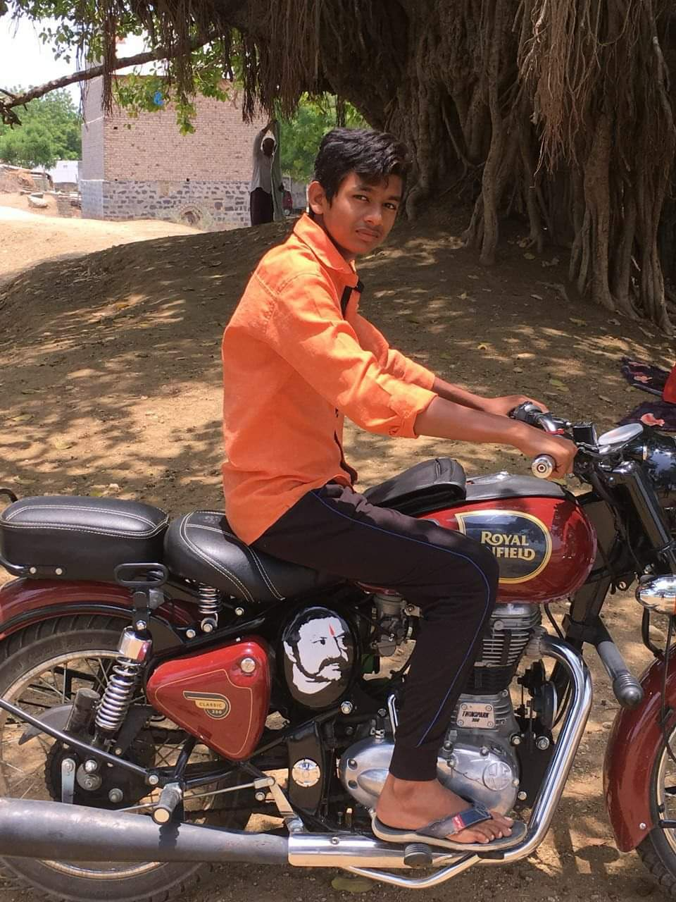
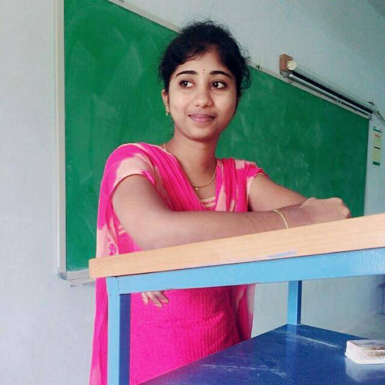
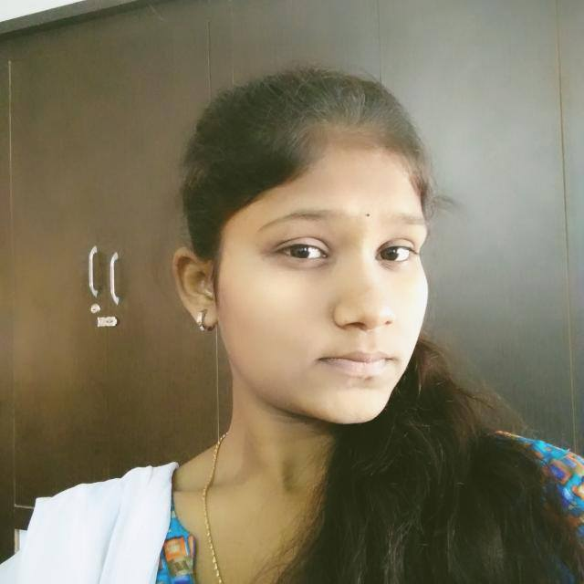
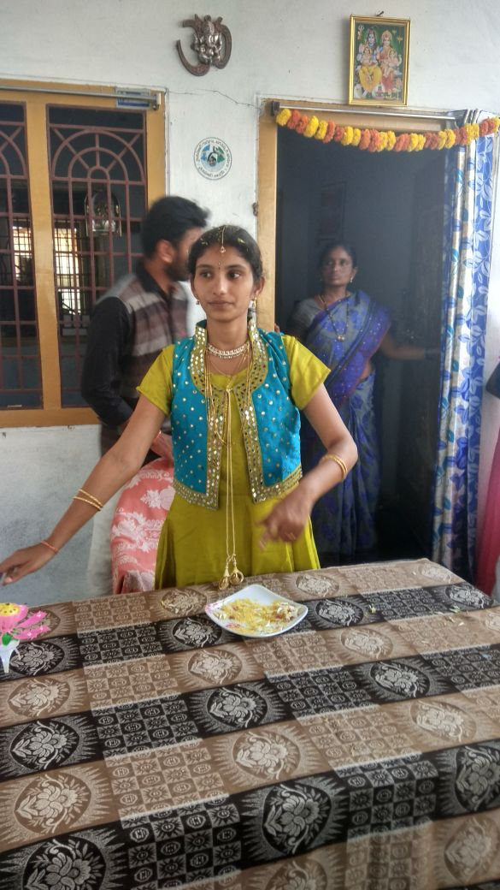

Copyright © 2019, MY SWEET FAMILY
All Rights Reserved
Developed & Maintained by The Harikrishna
My hero is the person who understands the people around him and knows the meaning of his life. He makes the people happy. The person I love. The person who makes me happy when I have a difficult time. The person who knows me well, my hero is the person who can make me love my life who makes me fight to live who makes me have a reason to wake up in the morning to see him. He is my hero. The hero in our lives is the hero who helps us and understands us so we make him our hero. The hero is not someone known. The hero is the one who leaves in ourselves a big thing, it's trust. Now my hero is my love. And there is one thing I want to tell you: you must have a hero to help you and to talk to you when you have a difficult time that hero will be your hero till death so don't lose him or her. So I chose him when I realized that he can understand me and help me when I have a difficult time. I know that he will stay with me forever. I chose him because I know that the most beautiful times I ever had were with him so I called him my hero to let him know that I will never lose him. He is my brother. My brother who knows me well who makes me fight to live who always stands on my side. He is my hero ... This person important to me because he can understand me and he can hear my whispers when I need him. He always tells me that the life will never stop and I have to enjoy my life. And he is a resilient person. He'll never be afraid because he trusts himself. He wakes up in that sensitive heart love to all people around and regardless to whatever the cost and the difficulties where he is the hero my brother will always be my hero with all patience and loyalty. He has big mind; he is so smart and he is perfect and because of him I'll always be good person. He is my hero. But in our lives we all of us are heroes. We are heroes if we understand the people around us and love them and we can listen to them. We can be heroes, we can change the world if we were better than the time we are. We can develop our minds. If we can impress the people, we can change the world. He made me stronger. Now I trust myself and I'll never be afraid from anything because I am convinced that I can make my life on my way. I can enjoy my life because I know that nothing will stop me. I trust myself and I am sure that I'll be successful of my life.
|  |  |

|
 |  | |||
| my family | suresh babu | harikrishna | lokesh | avinash | vishnu | siva | srimanarayana |
My brother is my hero. He is my refuge and deliverance when times are hard and when times are good. He pushes me with determination and motivation to achieve more than the next person. Whether it be through sports, school, family or friends, my brother helps carry me when I need it most. Our lives progressed to step parents and step siblings, moving and attending college. For Aaron, after college he joined the army to further his dedicated and disciplined person. He trains day in and day out to stand for the country he loves and for strength, determination and selflessness. Yet another reason why my brother is my hero
My sisters inspires you, she drives you crazy and motivates you when you are down. She is the one who knows you from the inside as well as the outside. She knows all your darkest secrets, yet love you for who you are. And to mark and celebrate this extraordinary bond here are some of the very best quotes about sisters.
|  |  |  | ||
| mounika | madhuri | madhavi | padhmavathi | sister |
My hero is the person who understands the people around him and knows the meaning of his life. He makes the people happy. The person I love. The person who makes me happy when I have a difficult time. The person who knows me well, my hero is the person who can make me love my life who makes me fight to live who makes me have a reason to wake up in the morning to see him. He is my hero. The hero in our lives is the hero who helps us and understands us so we make him our hero. The hero is not someone known. The hero is the one who leaves in ourselves a big thing, it's trust. Now my hero is my love. And there is one thing I want to tell you: you must have a hero to help you and to talk to you when you have a difficult time that hero will be your hero till death so don't lose him or her. So I chose him when I realized that he can understand me and help me when I have a difficult time. I know that he will stay with me forever. I chose him because I know that the most beautiful times I ever had were with him so I called him my hero to let him know that I will never lose him. He is my brother. My brother who knows me well who makes me fight to live who always stands on my side. He is my hero ... This person important to me because he can understand me and he can hear my whispers when I need him. He always tells me that the life will never stop and I have to enjoy my life. And he is a resilient person. He'll never be afraid because he trusts himself. He wakes up in that sensitive heart love to all people around and regardless to whatever the cost and the difficulties where he is the hero my brother will always be my hero with all patience and loyalty. He has big mind; he is so smart and he is perfect and because of him I'll always be good person. He is my hero. But in our lives we all of us are heroes. We are heroes if we understand the people around us and love them and we can listen to them. We can be heroes, we can change the world if we were better than the time we are. We can develop our minds. If we can impress the people, we can change the world. He made me stronger. Now I trust myself and I'll never be afraid from anything because I am convinced that I can make my life on my way. I can enjoy my life because I know that nothing will stop me. I trust myself and I am sure that I'll be successful of my life.